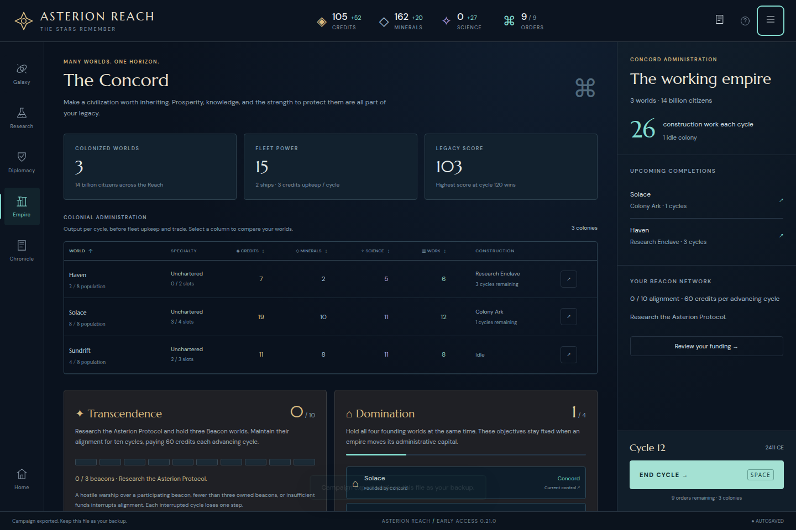
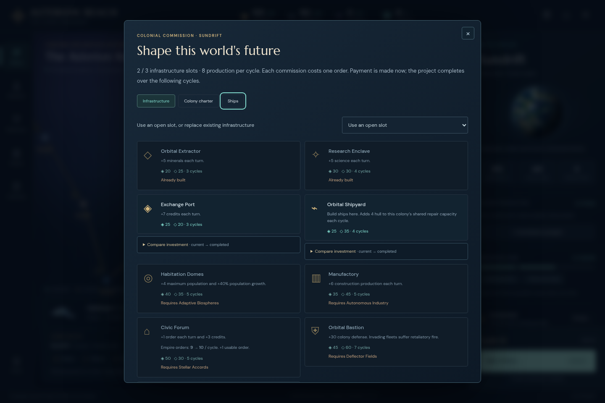
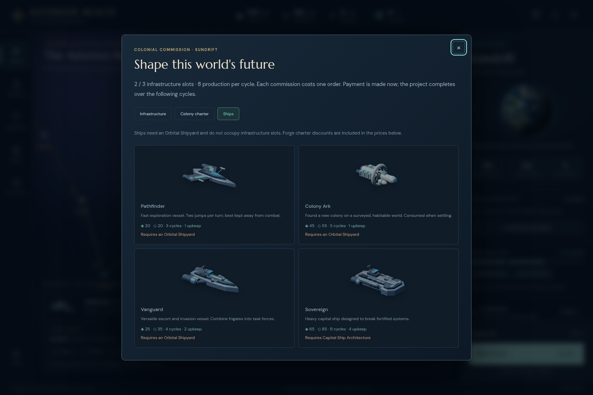

ASTERION REACH · ACTUAL UI OPENING · FROZEN0.21.0
Twelve cycles into the Reach
A novice-style opening on the normal default seed reached three colonies,14 population and trade with all three known powers. The player commissioned a second replacement Colony Ark, held a deliberate observation frigate and was two projected cycles from Autonomous Industry. This was one model-driven UI playthrough, not a human cohort, balance estimate or completed victory campaign.
The entire opening stayed on immutable http://127.0.0.1:5213 at1440×960. There were no grants, imports, save edits, rollback, hidden-state inspection or strategy automation. Ordinary decisions were made from visible systems, menus, rendered values and reports. The driver issued explicit user-interface actions and retained every requested action, successful click, observation and error.
What was actually played
The recorded count is 188 successful UI actions including navigation and audit, not188 game commands. Eleven ordinary End Cycle actions advanced1→12. The final ship queue has one displayed cycle remaining; Haven’s Enclave has three. No battle or invasion occurred.

The actual cycle12 campaign immediately before read-only keyboard checks.Three related keyboard defects
Preserve the selected control’s focus after a view rebuild. Construction tabs, Research categories and Chronicle filters successfully change their displayed content but replace the activating button. Their handlers fail to focus its replacement.
The smallest correction restores focus to the matching newly rendered tab/filter. Existing colony sorting and replacement selectors already use this pattern. This needs no rule changes or new controls.
Construction: from Empire, Inspect Sundrift and open Commission a project. Initial focus is Close. Tab three times focuses Ships; Enter opens Ships but moves focus toClose. From there, Tab focuses Infrastructure; Space opens Infrastructure and again moves focus toClose. The latter panel has available projects, so this is not an all-disabled-content fallback.
Before Ships · After Enter · Before Infrastructure · After Space · Frozen source, construction-tab handler
Research: click the Research rail view, then Tab six times toEngineering. Enter changes the category and leaves focus onBODY. Before · After.
Chronicle: click the Chronicle rail view, then Tab three times toDiscovery. Space changes the filter and leaves focus onBODY. The nextTab returns toAll rather than proceeding fromDiscovery. Before · After · NextTab.

Ships receives normal Tab focus.
Enter changes the tab and unexpectedly focusesClose.Other flows and guide
Game menu focus starts atReturn, wraps toClose onTab and back onShift+Tab, and Escape restores the menu launcher. New-campaign navigation reaches its seed input by keyboard; Escape cancels without replacing the save. The latest briefing opens with focus on Continue planning and closes with Escape. Initial settlement and actual incoming trade dialogs accepted ordinary Enter activation. No game page error or failed resource response was recorded.
The desktop field guide loads without horizontal overflow. Its keyboard-only Skip link works through the intended firstTab thenEnter. All nine table-of-contents section links reach visible headings. The opening costs, move-versus-order explanation, trade consent and ship construction descriptions matched the actions observed here. The guide’s general Bastion/blockade wording was not exercised in this peaceful opening; no misunderstanding or combat conclusion is claimed.
Ten guide anchor checks · Actual production guide DOM · Rendered guide text
Errors retained
One campaign-driver mistake remains in the raw log: a cycle11 Khar offer interrupted a batched plan. The following background treaty-button click timed out; the action did not execute. The actual offer was then read and accepted normally. This was not a broken diplomacy control.
Two guide-driver attempts were also corrected: the first tried to mouse-click the offscreen keyboard-only Skip link; the second checked an anchor while smooth scrolling was still in progress. The corrected run uses keyboard activation forSkip and waits for actual destination arrival. Both original runners and the correction note are preserved. All ten intended links pass.
Unchanged inspection and exact evidence
Actual UI exports made before and after the read-only keyboard audit are byte-identical:58,466 bytes, SHA256 d8bf73702ea980fd3b3f7079fd7a31fe0e2d09ce4bdaa1704b68355bef14a45c. Only hashes were examined for this equality check; raw save data was not used to choose strategy. The original browser was then closed normally.
Requests, actual actions and errors · UI driver · Before/after export equality · Actual pre-audit export · Actual post-audit export · Summary · Source and production fingerprints · Artifact hashes
This folder freezes the original finding. Any corrected-build acceptance belongs to a separate follow-up bundle; the played campaign is not retroactively relabeled as testing that later version.